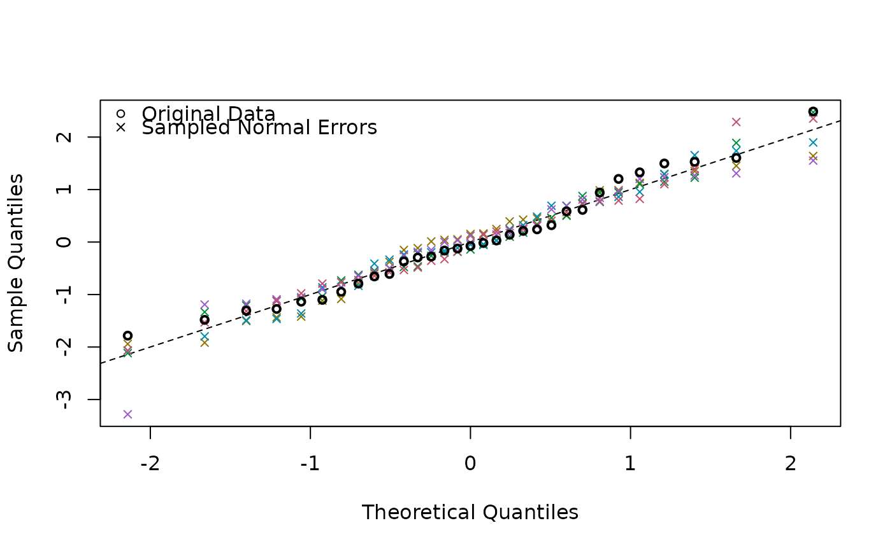

Produces a sample of QQ-plots based on the fitted values, overlaid by a QQ-plot of the original data.
iNZightQQplot(x, n = 5, env = parent.frame())an lm or svyglm object (with family = "Gaussian".
the number of sampled QQ plots to produce beneath the QQ plot of
x.
environment for finding data to bootstrap
No return value, called to produce plot.
Multiple bootstrap models are generated from the fitted values of
the model, each with different random normal errors with standard
error equal to the estimated residual standard error from the
original model. These are plotted, and then overlaid by the QQ plot
from the original data.
This plot can be used to assess the assumption of normality in the
residuals for a linear regression model.
fit <- lm(Volume ~ Height + Girth, data = trees)
iNZightQQplot(fit)
